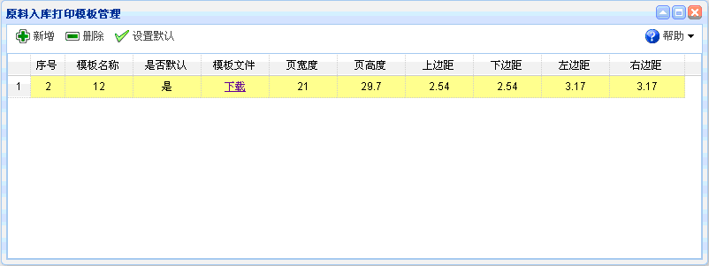
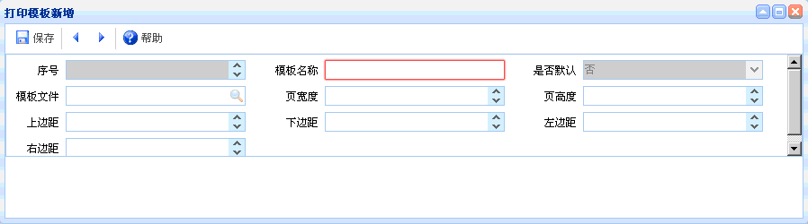

打印
打印
概述：如果需要打印某个单据，需先设置模板，然后把鼠标放在打印按钮的向下图示上就会显示【模板设置】。如图

功能介绍：点击模板设置，如下图所示。包含有新增、删除、设置默认三个功能。其中页宽度等长度单位都为厘米，默认的模板为A4纸样式。

图表3-1【打印模板】
图表3-1【打印模板】
【新增】点击新增，如下图所示。新增完毕点击保存。新增时红色文本框为必填项，灰色文本框为默认，有搜索图案的要进行查询。

图表3-1【打印模板新增】
图表3-1【打印模板新增】
【删除】如果不需要某个打印模板，点击删除。
【设置默认】选择某个模板，点击设置默认，就把该模板的状态改为默认状态。
 常见问题
常见问题
1、？
2、？
3、？